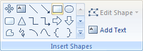
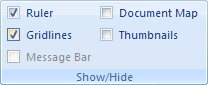
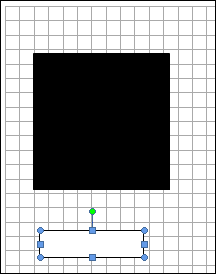
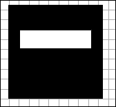
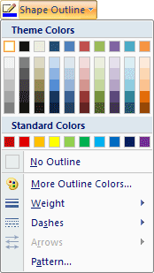
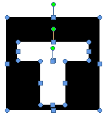
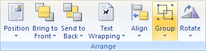
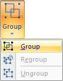
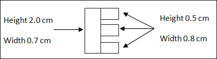

Free
computer Tutorials
|
Free
computer Tutorials
|
|
 home home |
|
|||||
Microsoft Word 2007 to 2010Logo ContinuedTo add the T to the black background we created in the previous lesson, we need two more rectangles joined together.
With your rectangle selected, locate the Insert Shapes panel on the Format tab:  Click on rectangle to select it. Now draw out a narrow rectangle just below your black square. Change the height of your new rectangle to 0.6 cm and the width to 2.3 cm. (In inches 0.24 and 0.9.) In Word 2010, if you have a blue rectangle, change the fill colour to white and the outline to black. Again, change the weight to 1. We now need the white rectangle on top of the black square. Before moving it, though, click the View tab on the Word ribbon. From the Show/Hide panel select the Gridlines item. This will allow us to align the shapes with precision:  Click back on the Format tab and your page will then look like this:  To move your white rectangle onto the black square, click the rectangle to select it. Now hold your left mouse button down on the rectangle. Keep it held down and drag the rectangle onto the black square. For a more precise alignment, hold down the CTRL key on your keyboard. Keep it held down and press the UP, DOWN, LEFT, or RIGHT arrows. In the image below, we've not only moved the white rectangle into position but also moved the black square down a bit. (To move the black square, click on it select just the square. Now use the CTRL and arrows keys.)  To do the rest of the T, draw out another rectangle on your page. This time, make the Height 1.4 cm and the Width 0.8. (In inches 0.55 and 0.315.) Move the new rectangle into position so that it looks like this: Notice that the new rectangle has a black outline. To get rid of this, make sure the rectangle is selected. Now locate the Shape Styles panel on the Format menu. Click the Shape Outline item. From the list of colours, select white:  Now do the same with the first white rectangle: select it and change the Shape Outline to white. Reposition your shapes if needed and you should have something like this: You have used three AutoShapes to create a letter T on a black background. However, all three shapes are separate. You can group them together to make one shape. To do that, you need to select each shape. So, hold the CTRL key down on your keyboard. Keep it held down and click the black square with your left mouse button. With your CTRL key still held down, left click on the first white rectangle, then on the second one. If you've done it correctly, your shapes should look like this:  With all three shapes selected, locate the Arrange panel on the Format tab, and the Group item:  Click the Group item to see a menu appear. From the menu, select Group.  If your shapes are not aligned correctly, you can click Ungroup instead. This will turn them into three individual shapes again. When you click Group, all three shapes become one shape. You can test this out by moving the new shape around the page. If one of the three gets left behind it means you haven't selected them correctly. Now that you have one letter done, try this exercise.
Exercise  (If you're using inches, the sizes are 0.787 x 0.275, then 0.197 x 0.315 for the three smaller rectangles.) When you have your letter E like the one above, group the four shapes. Then change the fill colour to black. Move your E next to the T and you page should look like this:
In the next lesson, you'll learn about Word Art. We'll use it to create the letter X for our logo. <--Back to the Word Contents Page View all our Home Study Computer Courses
|
||||||
|